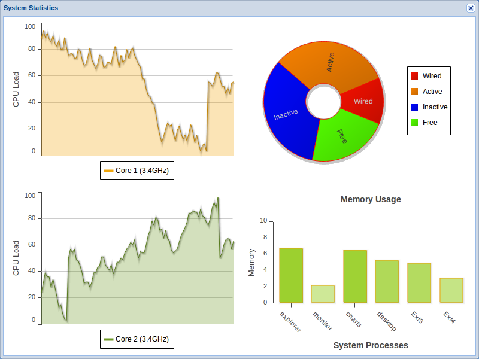
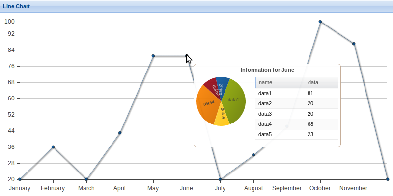
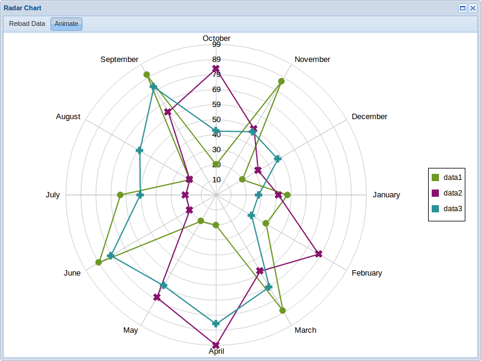
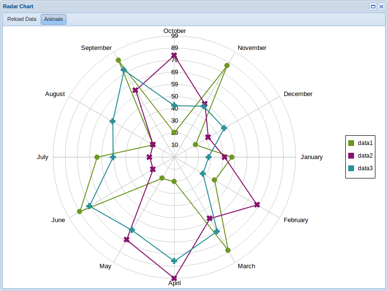
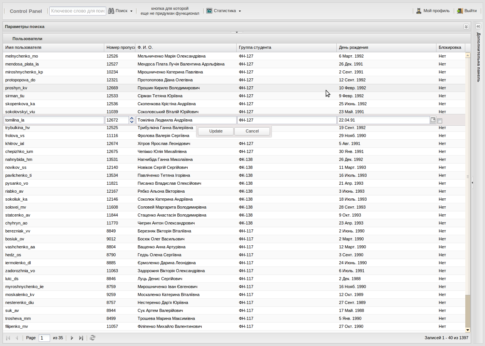

Создание интерактивных пользовательских интерфейсов для систем мониторинга сетевых ресурсов
Что же мы имеем в настоящее время?


Новые технологии
Новый стандарт – HTML5

HTML5 позволяет создавать пользовательские интерфейсы, сравнимые по своему функционалу с привычными настольными приложениями.
Также новый стандарт открывает возможности для рализации насыщенных и удобных интерфейсов, способных изменить стандартные подходы к представлению данных.





-
Возможности:
- анимация движения;
- динамическое создание элементов;
- перспектива;
- бесконечная сцена;
- поддержка связи с сервером и динамическая загрузка контента.
Выводы:
Использование новых стандартов веб-технологий предоставляет возможность отойти от привычного вида представления данных и расширить возможности отображения информации в графическом виде.
Благодарю за внимание